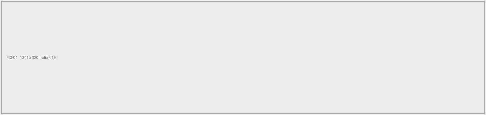
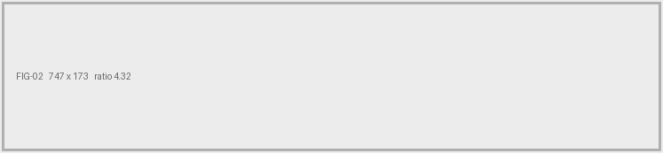
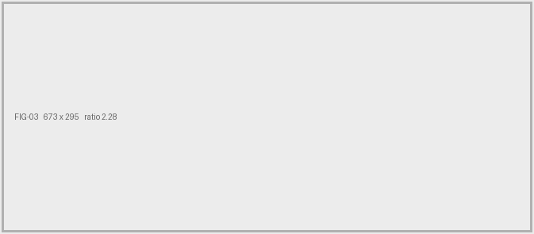
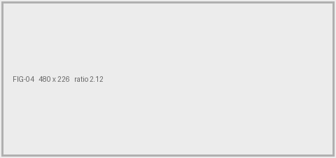

DR-0NN
Product datasheet [[PRODUCT]],
read as a tender attachment.
The current published datasheet for the [[PRODUCT]] was read against the requirement specification in Bilag 2, requirement by requirement. Nothing here is a score. The buyer scores.
Bilag 2 sets sixty numbered requirements. Twenty-six ask for a delivery plan, an option price or a complaints procedure, which no product datasheet answers. Thirty-four remain.
Answered means the document states the thing the buyer asks for. Partial means close but off the point. Absent means there is nothing to point at.
[[Word]] of thirty-four can be answered.
Krav [[list]]. [[What they cover, one phrase.]]
Krav [[list]]. [[Why each is only partial.]]
Krav [[list]]. [[The one thing worth saying.]]
Scored as one document. [[What the rest of the published set is, and whether the absences hold across it. Only sayable because the family was checked.]]
DR-0NN
Four things an evaluator meets first.

[[Claim, max 38 characters.]]
«[[The requirement, verbatim. Max 80 characters.]]»
[[What the document does about it. Max 90 characters.]]

[[Claim, max 38 characters.]]
«[[The requirement, verbatim. Max 80 characters.]]»
[[What the document does about it. Max 90 characters.]]

[[Claim, max 38 characters.]]
«[[The requirement, verbatim. Max 80 characters.]]»
[[What the document does about it. Max 90 characters.]]

[[Claim, max 38 characters.]]
«[[The requirement, verbatim. Max 80 characters.]]»
[[What the document does about it. Max 90 characters.]]
[[One closing line. Something true that is not a finding.]]